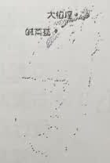
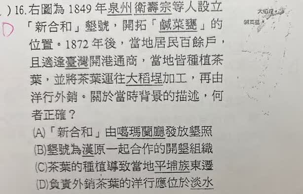

分享原卷｜第16題
完整原題

先想一想，再查看答案、解說與原圖
逐項解析
| 選項與原句 | 判讀 | 句意與判斷理由 |
|---|---|---|
| (A) 「新合和」由噶瑪蘭廳發放墾照 | 不選 | 鹹菜甕在新竹關西；噶瑪蘭廳位於宜蘭，不能以此配對。 |
| (B) 墾號為漢原一起合作的開墾組織 | 不選 | 墾號一般是招佃拓墾的組織，不能一概定義為漢原合資。不過新合和的具體參與者另有原卷敘述疑點，詳見解說。 |
| (C) 茶葉的種植導致當地平埔族東遷 | 不選 | 原題只敘述茶業的發展，不能據此把當地族群東遷直接歸因於種茶。 |
| (D) 負責外銷茶葉的洋行應位於淡水 | 應選 | 依原卷預期考點，茶葉在大稻埕加工後由淡水通商口岸輸出，四選項以D最直接符合。 |
詳細說明與解題步驟
依原卷預期答案選D。先把地點串起來：鹹菜甕是關西舊稱，在北部內陸；大稻埕是茶葉加工與集散中心；淡水是北部對外通商口岸。因此題目所問對外貿易背景，與淡水最吻合。
原AI解說訂正：不能把關西、大溪等產地全部說成順大漢溪水運。關西位於鳳山溪流域，不能將不同流域串成同一條河運路線。也不能用「來自泉州」直接斷定所有參與者均為漢人。
原題措辭的範圍說明：史料研究記錄衛阿貴後人組「衛壽宗」公號續墾，屬竹塹社衛氏拓墾背景，新合和的具體參與者不能只依題幹「泉州衛壽宗」就斷言全是漢人。B若在問墾號的普遍定義，不宜一概說漢原合作；若在指這個特定墾號，則須查清史實，不能單靠原AI排除。D也應理解為淡水口岸的外銷體系，不是說所有洋行的辦公處一律設在今日淡水區；大稻埕本身也有洋行與茶廠。
題幹與選項均照原卷保留，上述表述限制已由使用者在monitor確認，維持原卷預期D；不把原AI的排除理由當成已證實的歷史結論。
核對：[水利署：鳳山溪的故事](https://www.wra.gov.tw/wra02/cp.aspx?n=9957)、[國史館臺灣文獻館：淡水與大稻埕的貿易範圍](https://www.th.gov.tw/EpaperSend/113/248/)、[客委會關西地方研究](https://cloud.hakka.gov.tw/Attachment/1/841111531371.pdf)。
核對註記：使用者已在monitor確認答案D與現有解說；保留原題B／D的範圍說明，不再要求同項核對。
原圖（僅本題）
